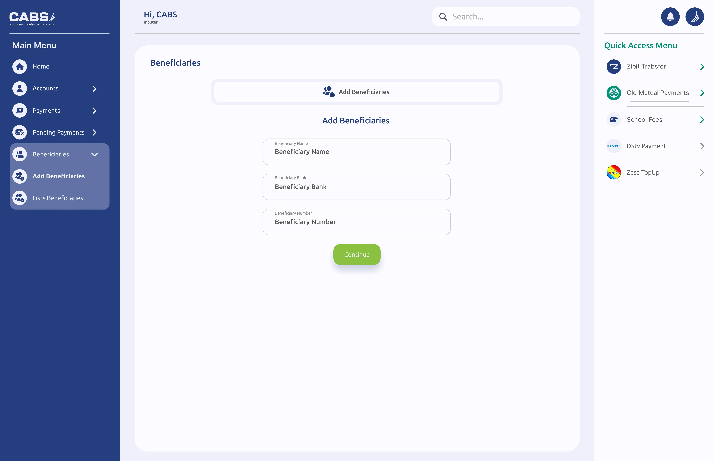
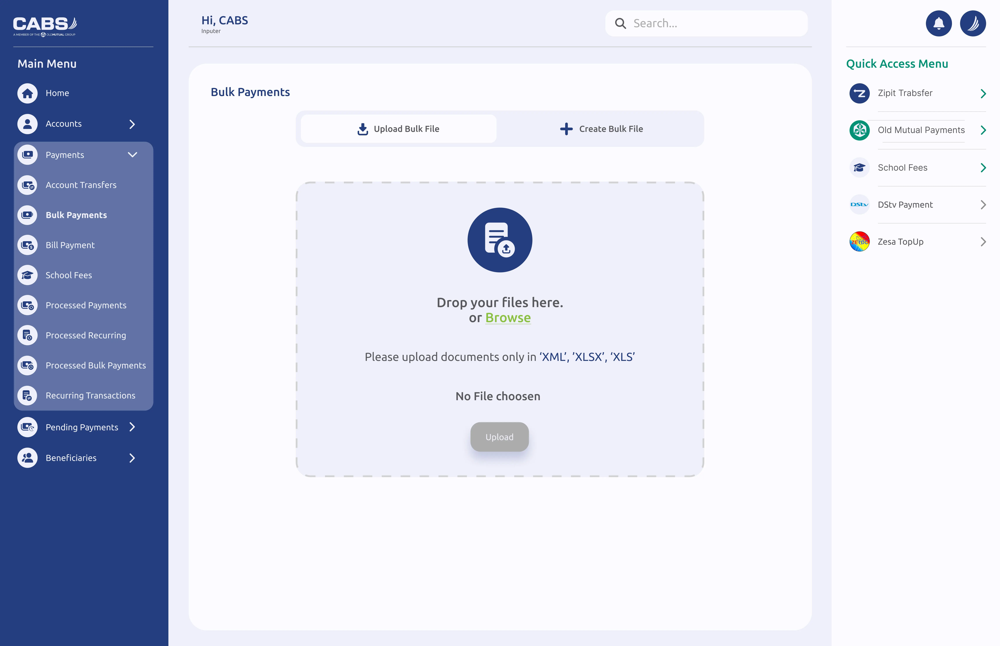
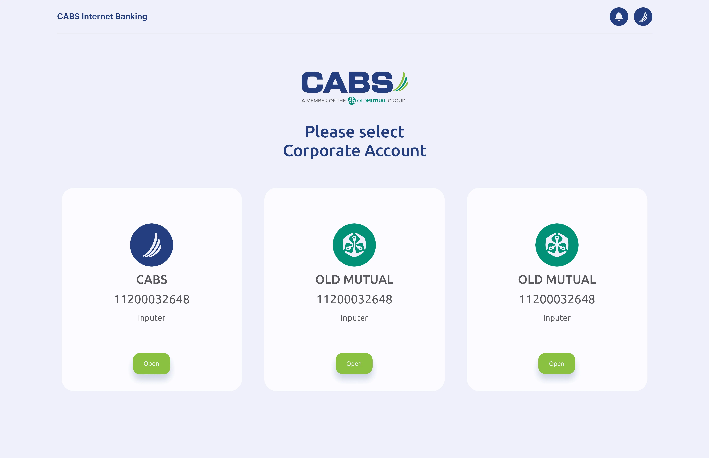
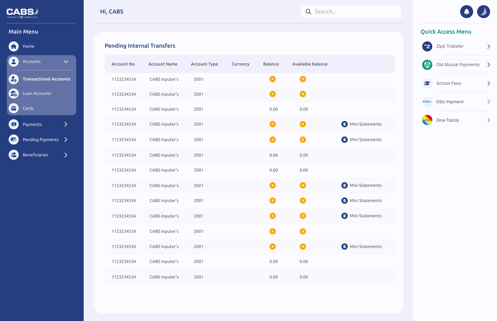
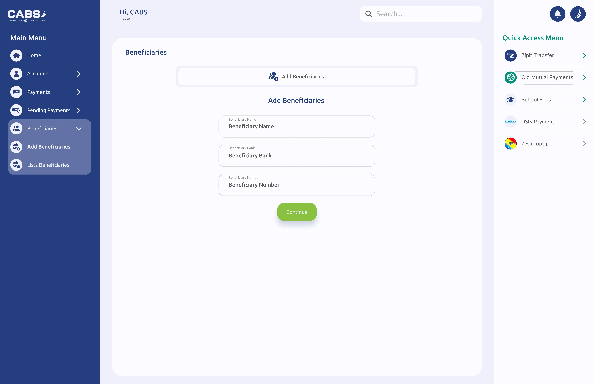
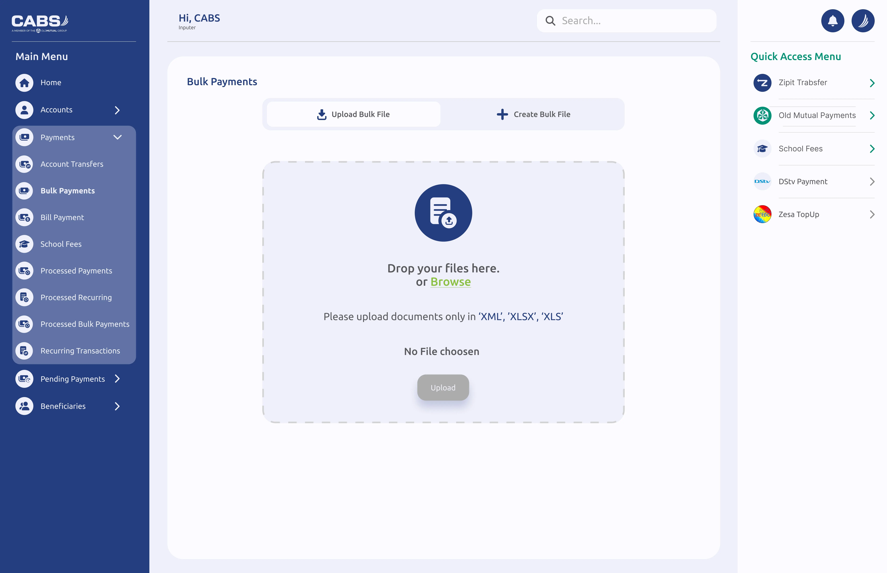
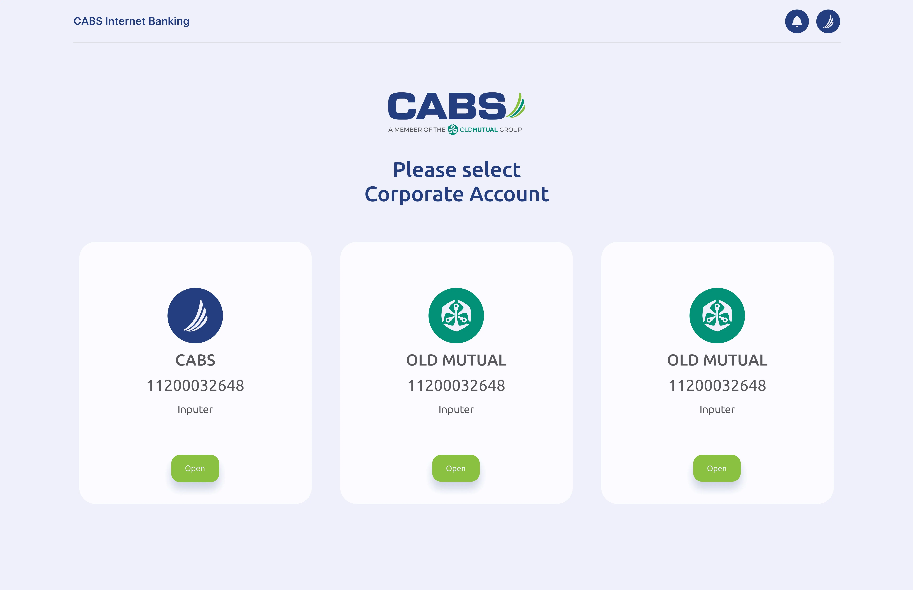
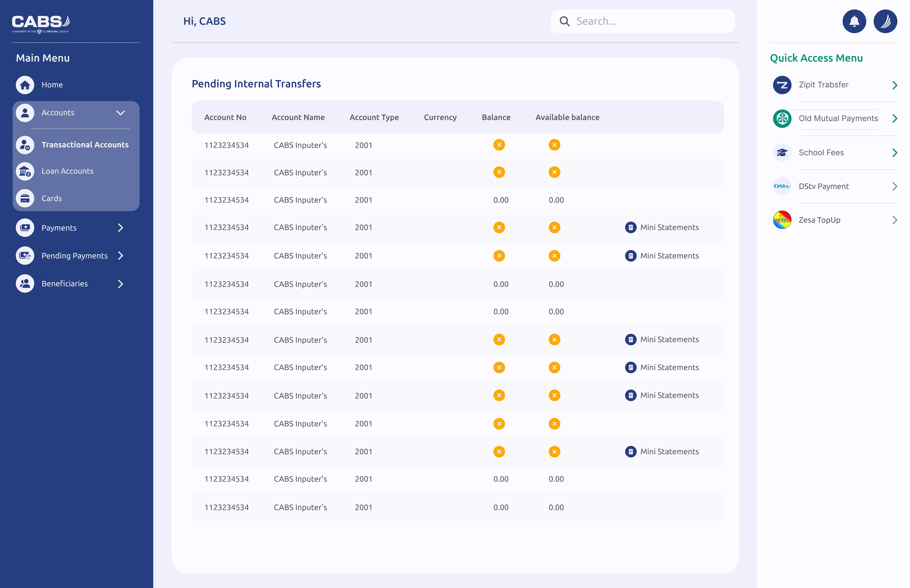

CABS, a leading financial institution in Zimbabwe, engaged me to redesign their Corporate Internet Banking platform. The bank already had a fully functional system with established features and user flows. The goal of this project was not to redefine functionality, but to modernize the user interface, improve usability, and align the platform with current digital banking standards for corporate users.
The redesign focused on creating a clean, professional, secure, and efficient experience tailored specifically for business clients who rely on speed, clarity, and control in their daily financial operations.

 






